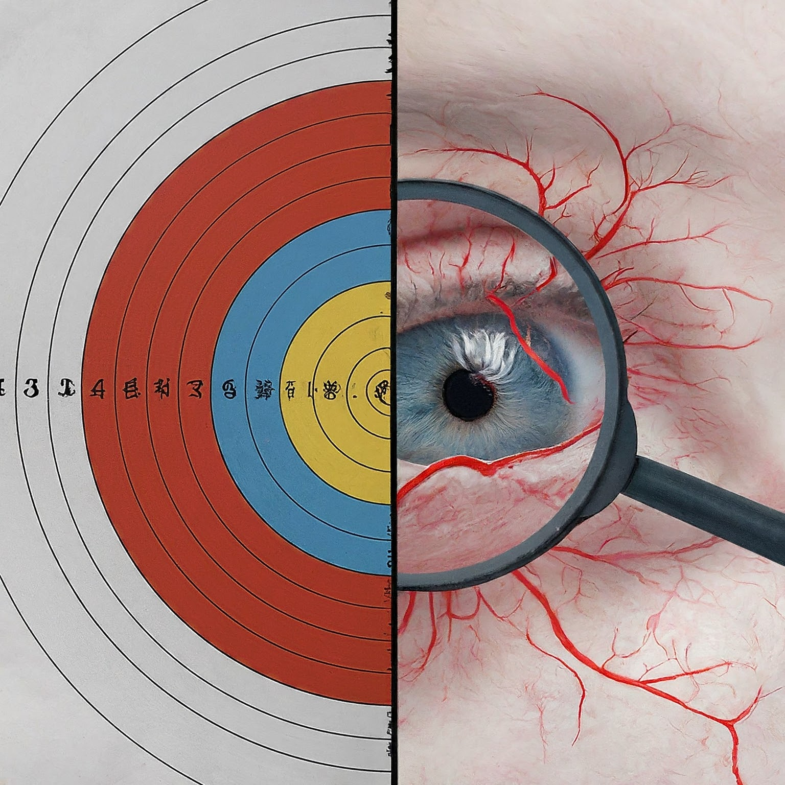

High Accuracy
Powered by AI, our tool provides highly accurate diagnostic results.

Easy to Use
A user-friendly platform designed for both professionals and patients.
Fast Results
Receive immediate results, enabling swift decision-making and treatment planning.